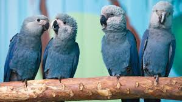
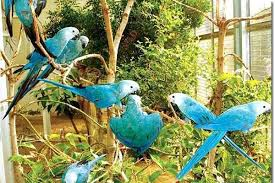
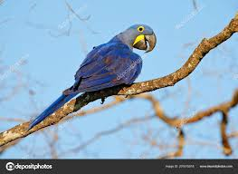
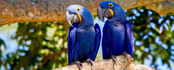
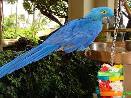
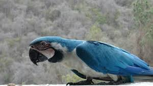

Рацион голубого ара
Поскольку такие птицы являются тропическими жителями, то и кормовой рацион у этих пернатых соответствующий их образу жизни. Представителями единственного вида рода Голубые ары из отряда Попугаеобразные употребляются в пищу всевозможные фрукты, а также ягоды кактуса, разнообразные орехи и всевозможные семена некоторых деревьев. В качестве пищи Голубой ара также употребляет всякую растительность. Благодаря наличию очень мощного клюва такие пернатые без труда раскалывают твёрдую скорлупу орехов буквально за считанные минуты. Бразильские орехи для представителей вида являлись особым лакомством.При содержании в неволе рацион питания ары должен включать в себя овощные культуры и фрукты. Попугаи очень любят яблоки и груши, бананы, огурцы и морковь, а также кукурузу. Этими пернатыми с огромным удовольствием поедаются плоды и некоторые ягоды, включая малину и шиповник.
В рацион обязательно должны быть включены орехи и разнообразные зерновые смеси, представленные овсом, пшеном, конопляными семенами, а также просом. Минеральная подкормка может включать в себя мел, гальку и ракушечник.
Размножение и потомство
Голубой ара, как правило, очень привязан к своему дуплу, где такие пернатые выращивают своё потомство. Гнёзда используются представителями вида в сезоны размножения несколько лет подряд. Как правило, брачный период у таких пернатых начинается в апреле или мае, и именно в это время можно наблюдать очень интересные взаимоотношения половозрелых птиц. Попугаи садятся на ветку и разворачиваются своими хвостами в противоположные стороны. Взрослые птицы с нежностью перебирают перья на шее, голове и под хвостом друг друга.
Такие действия сопровождают относительно негромкими, характерными булькающими звуками, после которых самцы начинают слегка пританцовывать, покачивая при этом головой, закидывая её назад и кивая. Каждая кладка содержит чаще всего два или три яйца, которые откладываются самкой с интервалом в пару дней. Длина яйца составляет не более 5 см при ширине около 3,5 см.
Процесс насиживания длится примерно 24-26 дней, а появившиеся на свет птенцы не имеют оперения и абсолютно слепы. Потомство выкармливается и согревается самкой. Самец в это время кормит самку, а также отвечает за охрану гнезда, но ночует всегда вне его. Оперяются птенцы примерно в четыре месяца, но ещё некоторое время кормятся за счёт своих родителей.
Гнёзда устраивает в дуплах старых деревьев, выбирая самые большие дупла. Самка откладывает яйца с интервалом в два дня. В кладке 2-3 яйца. Насиживание продолжается 24-26 дней, насиживает яйца только самка. Самец кормит самку и охраняет гнездо, ночует он вне гнезда. Птенцов кормят оба родителя. Оперяются птенцы около 4 месяцев, но ещё три последующих месяца их кормят родители.
     